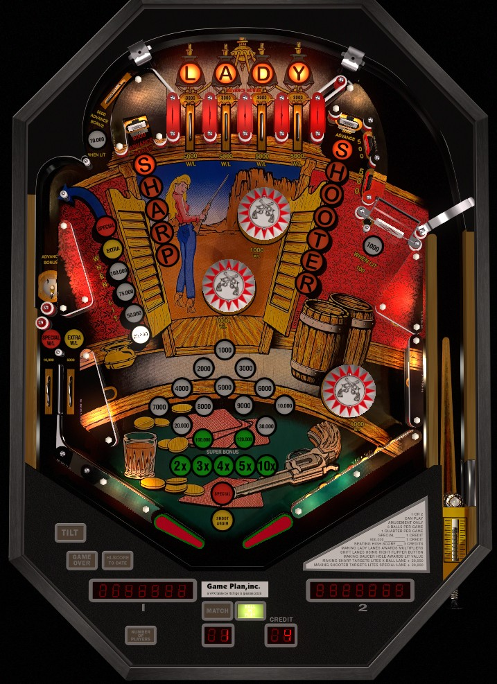

Not to be confused with Sharpshooter (Game Plan, 1978) or Sharp Shooter II (Game Plan, 1983), which are conventional pinball games. Lady Sharpshooter is a cocktail pinball table.
Focus on the Sharp or Shooter standup targets or the left saucer for increasing values that far outpace most of the rest of the game's progression. If you have a very high super bonus (at least 100,000), completing the top lanes for bonus multipliers also becomes an acceptable strategy.
The below picture of Lady Sharpshooter's playfield was taken from the VPX recreation by JPSalas.

The four top lanes are lit to start. Lit top lanes score 5,000 points and a bonus advance, while unlit top lanes score 3,000 and a bonus advance. Lane change is available on the right flipper only, allowing the lit lanes to be rotated. Completing the top lanes advances the bonus multiplier in the sequence 2x-3x-4x-5x-10x, lights one pop bumper for the rest of the game, lights the spinner for the rest of the game, and resets the top lanes.
Each hit to the Sharp target scores the following and adds a letter to Sharp:
Each hit to the Shooter target scores the following and adds a letter to Shooter:
Letters in Sharp and Shooter are preserved from ball to ball. By default, the lit Special and extra ball on the left out and in lane are not preserved from ball to ball, but a setting that enables this can be turned on. Special can score a free game, an extra ball, 50,000 points, or nothing.
The left saucer lane starts each ball at a value of 25,000 points. Making the saucer scores the lit value and adds 25,000 to it, up to a maximum of 250,000 points per shot. The saucer also gives 1 bonus advance for every 25,000 points scored (e.g. 4 bonus advances when lit for 100,000). Finally, the saucer is also lit for either extra ball or Special when it is advanced to either 100,000 or 150,000 points, based on game settings. If the Sharp target is too difficult or dangerous to hit reliably, focus on this saucer all day from the right flipper. The saucer value can be set to carry over from ball to ball, but by default it does not.
The very narrow shot between the saucer lane and the Sharp target that directs the ball back to the top of the table scores 5,000 points and a bonus advance when not lit, or 10,000 and a bonus advance when lit. Making this shot once will light this shot for the rest of the ball.
The right spinner always awards 1 bonus advance per spin. It also scores 100 points per spin when not lit or 1,000 per spin when lit. Completing the top lanes once lights the spinner for the rest of the game.
Bumpers score 100 points when not lit, or 1,000 points plus a bonus advance when lit. Making the upper left saucer or completing the top lanes will light one bumper for the rest of the game. Note that there are 2 bumpers in the middle of the playfield, and one in the lower right in the place of a right slingshot.
Top lanes, the upper left "orbit" shot, each spin of the spinner, and each hit to a lit pop bumper award 1 bonus advance. The Sharp target, Shooter target, and upper left saucer award increasing numbers of bonus advances, up to 4, 6, and 10 respectively. Bonus multiplier is advanced in the sequence 2x-3x-4x-5x-10x with each completion of the top lanes. Max bonus is 10x 249,000 = 2,490,000 points. Base bonus always carries over from ball to ball; by default, bonus multiplier does not. While end of ball bonus can be a massive part of scoring, it takes a while to get to that point; don't focus too much on bonus multipliers unless the bonus is already at least 60,000 or the bonus multiplier carries over from ball to ball.
Note that, if playing Lady Sharpshooter in VPX, the 60,000 insert on the bonus ladder incorrectly reads 100,000 instead.
The left side of the table bottom is mostly conventional, with one out lane, one in lane, and a slingshot. The out lane scores 10,000 points, or Special when lit by spelling Shooter. The in lane scores 5,000 points, or extra ball when lit by spelling Sharp. The slingshot is very far from the left flipper, since this is a cocktail/widebody game. On the right, there is no in lane, out lane, or slingshot. Instead, a 10-point wall rubber extends from the flipper hinge to the right edge of the playfield, and a single pop bumper is located where a slingshot should be. This pop bumper is far enough away from the center drain that it should rarely cause a straight-down-the-middle feed directly, but be mindful of the ball's location and direction in this area regardless. If this bottom pop bumper is lit, the ball getting trapped between the bumper and a side wall for a while can build bonus impressively quickly.